생활 접근성
교통카드 키오스크 연습
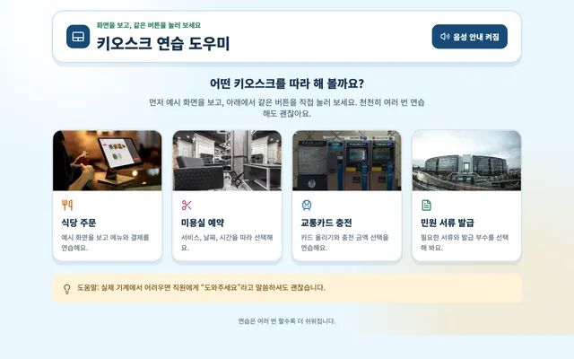
문제: 교통카드 충전 기계가 낯설면 어떤 버튼을 눌러야 할지 망설이게 돼요.
해결: 도움 안내를 따라 실제 충전 없이 키오스크 사용 단계를 연습해요.
실제 충전이나 결제가 아닌 모의 체험입니다.
생활 접근성
메뉴 탐색 도우미
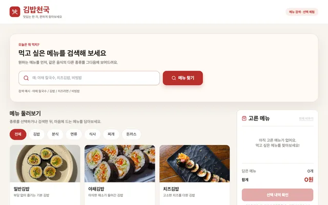
문제: 메뉴가 많으면 원하는 음식을 찾고 총금액을 계산하기 어려워요.
해결: 메뉴 검색과 선택한 음식의 합계 표시로 주문 과정을 화면에서 연습해요.
메뉴와 가격은 참고용이며 실제 주문이나 결제가 이루어지지 않습니다.
생활 접근성
문장으로 주문 연습
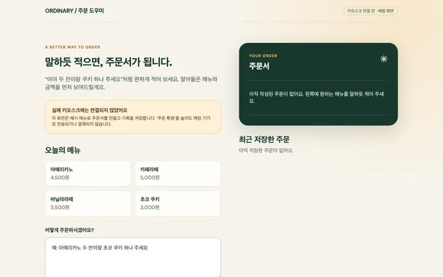
문제: 메뉴와 수량을 여러 버튼으로 입력하는 방식이 번거로울 수 있어요.
해결: 주문할 내용을 문장으로 적으면 알아들은 메뉴와 수량, 합계를 확인해요.
확인된 기능은 텍스트 입력입니다. 인식하지 못한 메뉴가 누락될 수 있습니다.
생활 접근성
쉬운 햄버거 주문
스크린샷 미공개
문제: 낯선 음식 이름과 작은 글씨는 햄버거 메뉴를 고르기 어렵게 만들어요.
해결: 큰 글씨와 쉬운 메뉴 표현을 선택하고 고른 음식의 수량과 합계를 확인해요.
주문 접수처럼 보이는 문구의 실제 전송 여부가 확인되지 않아 체험 링크는 제공하지 않습니다.
생활 접근성
어르신 화면 도우미
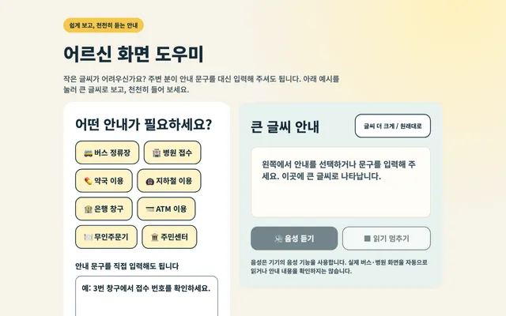
문제: 작은 글씨의 안내 문구는 읽기 어려울 수 있어요.
해결: 직접 넣은 안내 문구를 크게 보여 주어 읽기 편한 화면을 만들어 봐요.
다른 기계 화면을 자동으로 읽어 주는 기능은 아닙니다.
생활 접근성
카페 키오스크 체험하기
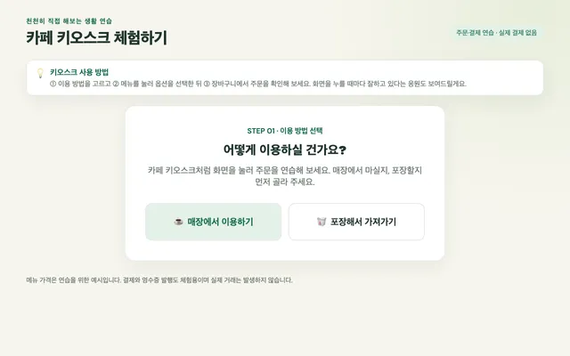
문제: 카페 주문은 음료뿐 아니라 옵션도 골라야 해서 복잡하게 느껴질 수 있어요.
해결: 음료 옵션 선택과 장바구니 담기를 실제 거래 없이 연습해요.
실제 거래는 이루어지지 않습니다.
생활 접근성
키오스크 길찾기 도우미
스크린샷 미공개
문제: 키오스크에서 원하는 메뉴가 어느 버튼 안에 있는지 헷갈려요.
해결: 메뉴 이름을 입력하면 그 메뉴까지 누를 버튼 순서를 안내해요.
확인된 기능 범위는 메뉴까지의 버튼 순서 안내입니다.
생활 접근성
키오스크 사용법 안내
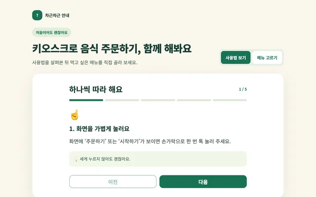
문제: 키오스크의 여러 버튼을 어떤 순서로 눌러야 하는지 낯설어요.
해결: 주문 절차를 단계별 안내로 살펴보며 화면 사용 순서를 익혀요.
주문 연습용입니다. 외부 저장과 직원 호출은 검증하지 않았습니다.
생활 접근성
키오스크 연습 도우미
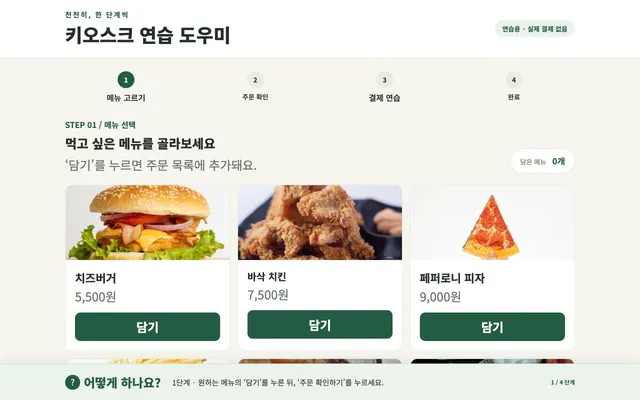
문제: 키오스크가 낯설면 주문부터 결제까지의 순서를 따라가기 어려워요.
해결: 메뉴 선택과 수량 조절, 모의 결제까지 차근차근 연습해요.
실제 주문·결제가 아닌 모의 체험입니다.
생활 접근성
키오스크 주문 도우미
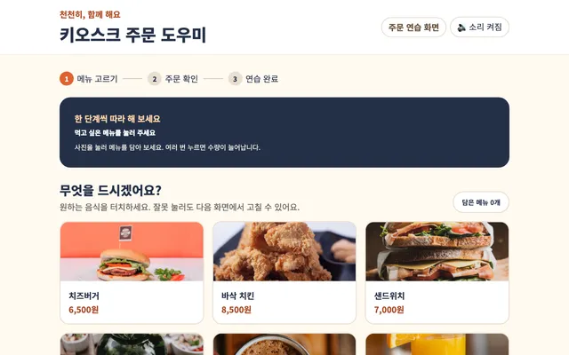
문제: 무인 주문 화면에서는 고른 메뉴와 수량이 맞는지 확인하기 어려울 수 있어요.
해결: 음료와 간식을 고르고 주문 내용을 다시 확인하는 모의 체험을 제공해요.
실제 주문·결제가 아닌 모의 체험입니다. 음성 기능은 검증 범위에 포함되지 않았습니다.
생활 접근성
키오스크 주문 연습
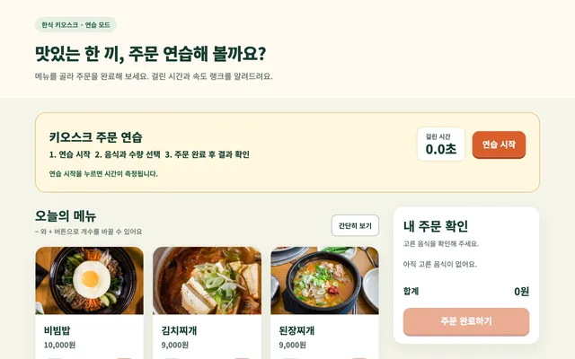
문제: 키오스크 주문 순서를 처음부터 끝까지 익힐 기회가 부족할 수 있어요.
해결: 메뉴 선택부터 완료 화면까지 짧은 모의 주문을 반복해 봐요.
실제 주문이 아닙니다. 빠른 조작보다 정확한 이해와 편안한 사용이 중요합니다.
소통과 안내
차근차근 사용 안내
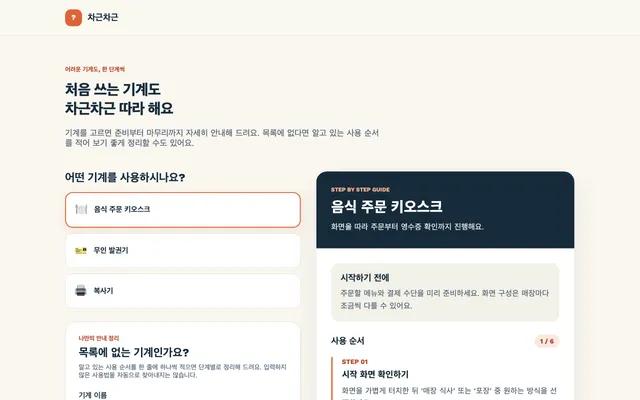
문제: 처음 쓰는 기계는 긴 사용 설명을 한 번에 따라가기 어려워요.
해결: 준비된 안내나 직접 적은 사용 순서를 한 단계씩 나눠 보여 줘요.
사용자가 넣은 내용을 정리하는 도구이며 새로운 사용법을 자동으로 찾지는 않습니다.
소통과 안내
LingoChat 번역 & 회화
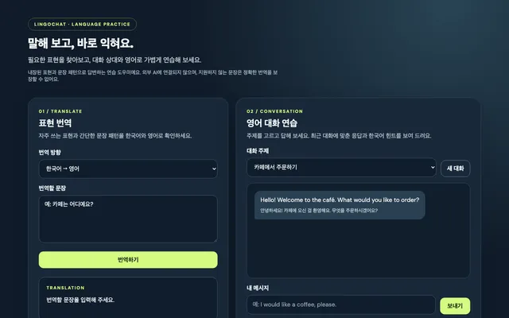
문제: 외국어로 주문하거나 대화할 때 어떤 표현을 써야 할지 막막해요.
해결: 내장된 문장과 규칙을 이용해 일상 상황의 번역과 회화 표현을 연습해요.
내장된 문장·규칙을 활용하며 범용 AI 번역의 정확도를 보장하지 않습니다.
우리 동네
청소년 시설 찾기
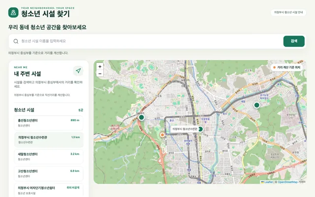
문제: 청소년이 이용할 시설의 종류와 위치를 한눈에 찾기 어려워요.
해결: 등록된 시설을 검색하고 소개와 위치를 함께 살펴봐요.
표시 거리는 기준 지점에서 계산한 참고값입니다. 운영 정보는 해당 기관에 확인하세요.
우리 동네
청소년 안심 장소 찾기
스크린샷 미공개
문제: 정해진 시간 안에 갈 수 있는 주변 장소를 찾기 어려워요.
해결: 출발지와 이동 가능한 시간을 기준으로 등록된 장소를 찾아봐요.
장소의 안전성을 보증하지 않습니다. 실제 운영 시간과 이동 경로를 별도로 확인하세요.
이동과 안전
대중교통 도착 알리미
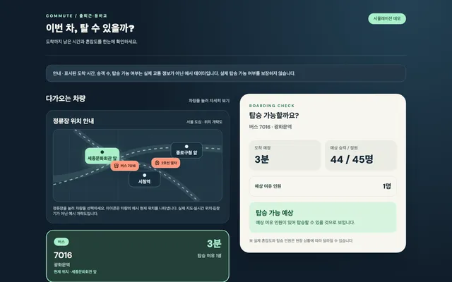
문제: 도착 시간만으로는 다음 차에 탈 여유가 있는지 함께 살펴보기 어려워요.
해결: 예시 데이터로 도착 시간과 남은 정원을 함께 보여 주는 시뮬레이션을 제공해요.
예시 데이터 시뮬레이션입니다. 실제 도착 정보나 백그라운드 알림을 보장하지 않습니다.
이동과 안전
등하교 경로 탐색
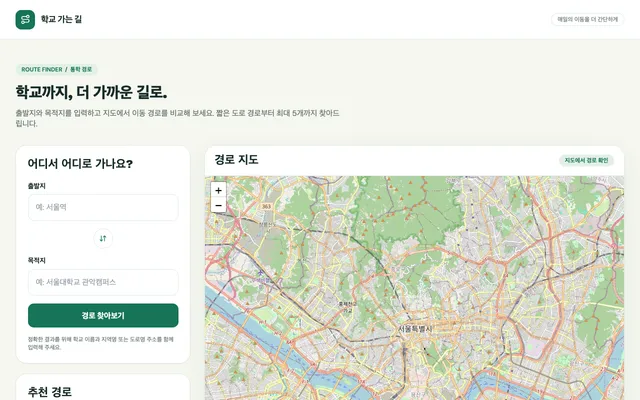
문제: 두 장소 사이의 여러 경로가 얼마나 다른지 한눈에 비교하기 어려워요.
해결: 지도에서 경로와 거리를 비교하되 자동차 도로 결과를 실제 도보 통학 안내로 쓰지는 않아요.
자동차 도로 기준 결과이므로 실제 도보 통학 경로로 사용하지 마세요.
이동과 안전
버스 탑승 도우미
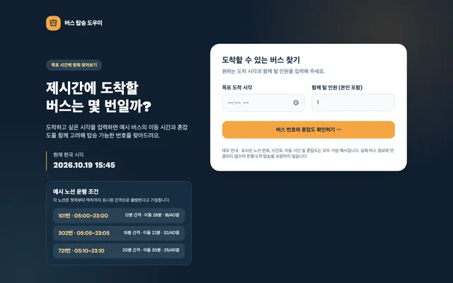
문제: 여러 명이 함께 탈 버스를 고를 때 도착 시각과 빈자리를 함께 비교하기 어려워요.
해결: 가상 시간표와 혼잡도를 이용해 출발 시각·인원에 맞는 버스를 비교해요.
가상 노선·시간표·혼잡도를 사용하는 교육용 시뮬레이션입니다.
이동과 안전
버스 혼잡도 시뮬레이터
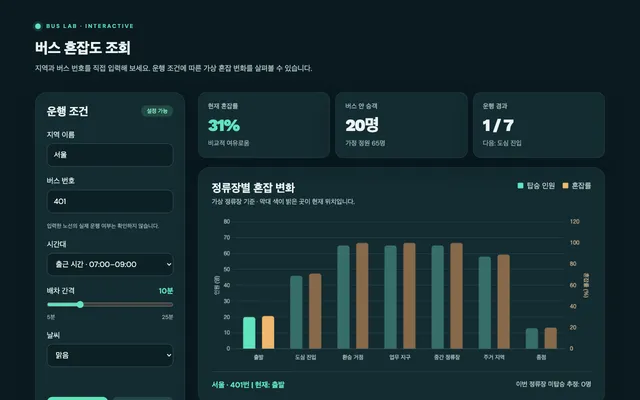
문제: 정류장마다 승객이 바뀔 때 버스가 얼마나 붐비는지 상상하기 어려워요.
해결: 가상 승객 수를 바꾸며 혼잡도와 탑승하지 못한 인원이 어떻게 달라지는지 살펴봐요.
가상 데이터를 사용하며 실제 노선의 실시간 혼잡도를 조회하지 않습니다.
이동과 안전
빙판 위험 알리미
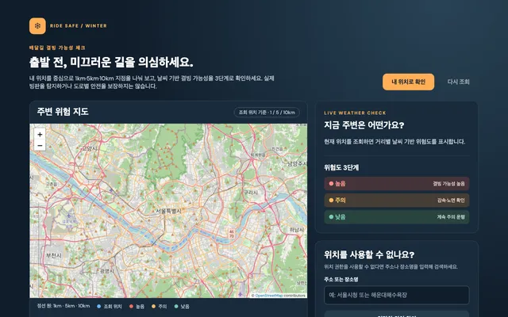
문제: 추운 날에는 어디가 얼기 쉬울지 미리 생각하기 어려워요.
해결: 장소 주변의 기상 정보를 바탕으로 결빙 위험을 살펴보되 실제 도로 감지는 하지 않아요.
도로의 실제 빙판을 감지하는 기능이 아닙니다. 안전 판단의 유일한 근거로 사용하지 마세요.
이동과 안전
초록불 연장 시간 계산기
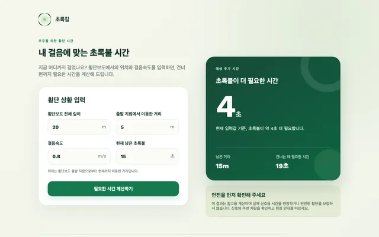
문제: 걷는 속도가 다르면 같은 거리도 건너는 데 필요한 시간이 달라져요.
해결: 거리·속도·남은 신호 시간을 넣어 추가로 필요한 시간을 계산해요.
실제 신호를 제어하지 않습니다. 실제 도로에서는 현장 신호와 안전 수칙을 따르세요.
이동과 안전
최적 경로 안내
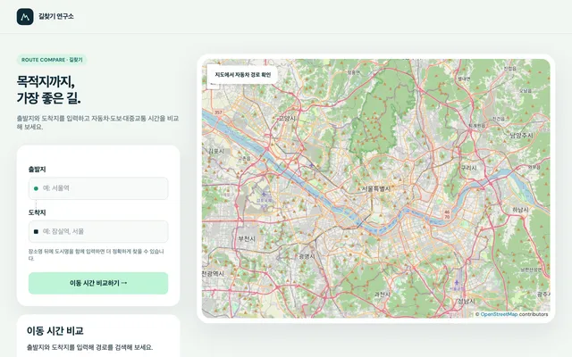
문제: 어떤 이동 수단을 선택할지 거리와 예상 시간을 비교하기 어려워요.
해결: 출발지와 도착지를 넣어 이동 수단별 거리와 예상 시간을 비교해요.
일부 시간은 추정치이며 실시간 교통 상황은 반영하지 않습니다.
이동과 안전
횡단보도 신호 기록
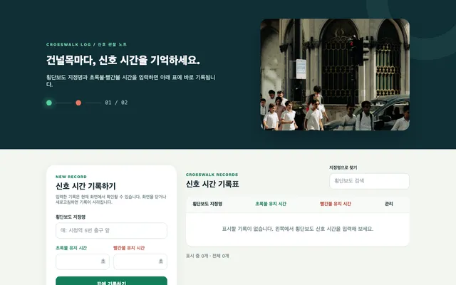
문제: 여러 횡단보도의 신호 시간을 기억해서 비교하기 어려워요.
해결: 관찰한 신호 시간을 입력해 화면에서 기록하고 비교해요.
기록은 새로고침하면 사라질 수 있습니다. 실제 신호 지시를 대신하지 않습니다.
환경과 자원
분리배출 가이드
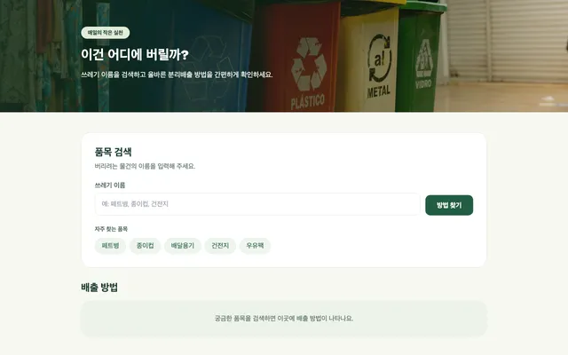
문제: 자주 버리는 물건도 수거함과 주의사항이 헷갈릴 수 있어요.
해결: 품목을 선택하면 분류와 배출할 때 주의할 점을 함께 보여 줘요.
실제 배출은 지역별 공식 기준을 우선하세요.
환경과 자원
분리수거 도우미
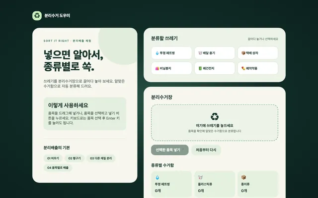
문제: 쓰레기를 어느 수거함에 넣어야 하는지 헷갈릴 때가 있어요.
해결: 품목을 골라 화면 속 수거함에 넣으며 분리배출 방법을 익혀요.
지역과 주택에 따라 실제 배출 기준은 다를 수 있습니다.
환경과 자원
분리수거 안내기
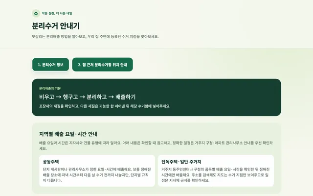
문제: 물건을 버리는 방법과 가져갈 수거 장소를 따로 찾아야 할 때가 있어요.
해결: 품목별 배출 안내와 등록된 수거 지점을 함께 살펴봐요.
실제 수거 품목과 운영 상태는 해당 장소에 확인해야 합니다.
환경과 자원
재활용 가이드
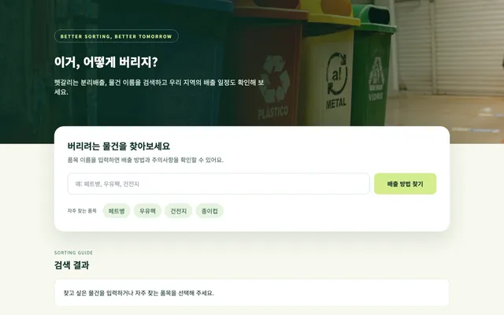
문제: 재활용 품목마다 분류와 씻는 방법이 달라 헷갈려요.
해결: 물건 이름으로 배출 방법을 검색하고 모르는 품목은 다른 확인 경로를 안내해요.
실제 배출 일정과 방법은 거주 지역의 공식 안내를 확인하세요.